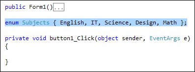
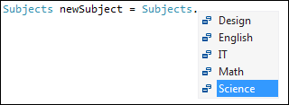

Enumerations in C# .NET
You can create your own collections of things with something called Enumeration. Suppose you wanted to set up a list of subjects that students can study, but don't want to keep typing the list out all the time. Instead, you can set up an Enumerated list. Here's how.
Add a new button to the form and set the text property as Enumeration. Double click your button to get at the coding window. Now add the enum part below to your code:

You start with the word enum. After a space, you type a name for your enumerated list. In between a pair of curly brackets, you type the list itself. We've added five subjects to our lists; English, IT, Science, Design, Math.
To use your enumerated list, click inside of your button code. Add the following line:
Subjects newSubject = Subjects.Science;
So you type the name of your enumerated list followed by a space. After coming up with a variable name, type an equals sign. Type the name of your list again, followed by a dot. You will then see the items in your list:

Select one of the items from your list, and end the line with a semicolon.
What you have done is to set up your own value type, with its own name (Subjects). The values in your type are the ones you added between the curly brackets. They also have an underlying number. So the first item is 0, the second item is 1, the third 2, etc.
To display it in a message box as a string, the code would be this:
MessageBox.Show( newSubject.ToString( ) );
It needs converting because it's an enumerated type - it's not a string.
If you want to get at the underlying number, you would do the conversion like this:
Subjects newSubject = Subjects.Science;
int enumNumber = (int)newSubject;
In other words, convert to int in the usual way, by putting (int) before what it is you want to convert. You could then loop round and do some checking. Something like this:
for (int i = 0; i < 4; i++)
{
if (i == 2)
{
MessageBox.Show("You're taking Science");
}
}
Enumerated lists are good for when you have a list of custom items and don't want to use an array.
And that ends the section on arrays and collections. There's still an awful
lot we haven't yet covered on the subject, especially for Collections. But it's
enough to be going on with, for a beginner! In the next part, we'll have a close
look at Strings.